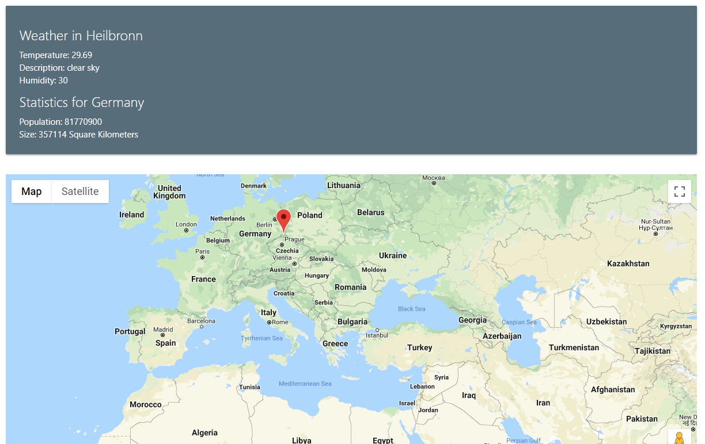

Statistics Map Case Study
This project allows users to get weather and statistics from various sources in one place by clicking on a map. It was built using React and uses four APIs including Google Maps, Google Geocoding, Open Weather and REST Countries. The application is still fairly basic with the statistics it offers and options for viewing data, but I plan to continue to improve it.
This project started as an assignment in which we were to use at least two APIs to create something that would have a theme and provide some sort of value to the user. My idea was to make an interactive map that would show statistics about different countries and local weather. I often find myself wondering about different countries around the world and how they compare to others in terms of size, population or other statistics. I always start by looking at Google Maps and getting a better idea of the geography of the area. I’m often curious to see which country in the area is more dense in population or what languages they have in common. To do this I end up looking at many different websites to get different information and directly comparing multiple statistics at the same time is difficult. This is where the idea for the stats map came from. I wanted to have a Google Map that users could click and instantly get many different statistics from multiple sources all on one page.
I started out by ensuring I was able to get the information I wanted from the APIs so I implemented text search functionality. This was to test the API calls I was making. After I got this working, I integrated the map and began working on being able to drop a pin to get location information. I used a package called google-maps-react (linked to on the GitHub of this project) to display the map. Going through the documentation I figured out how to add marks to the map and get the latitude and longitude from the placed marker. After that it was a matter of translating the latitude and longitude to a city and country name pair. For this I used Google’s Geocode API which then passes the country and city name to the other APIs to get the weather of the nearest city and statistics for that country.
I am still working on this application and experimenting with different APIs and data sources that interest me. I think this could be the start of a useful mobile application for travelers to quickly get information all in one place. I have many ideas on how to improve the current version of this site and I look forward to continuing to work on it.